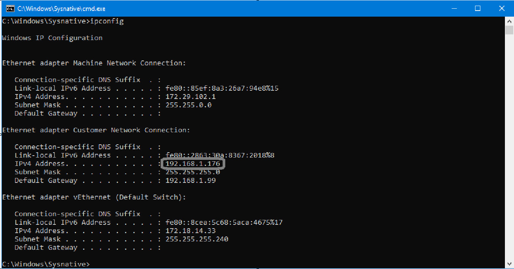
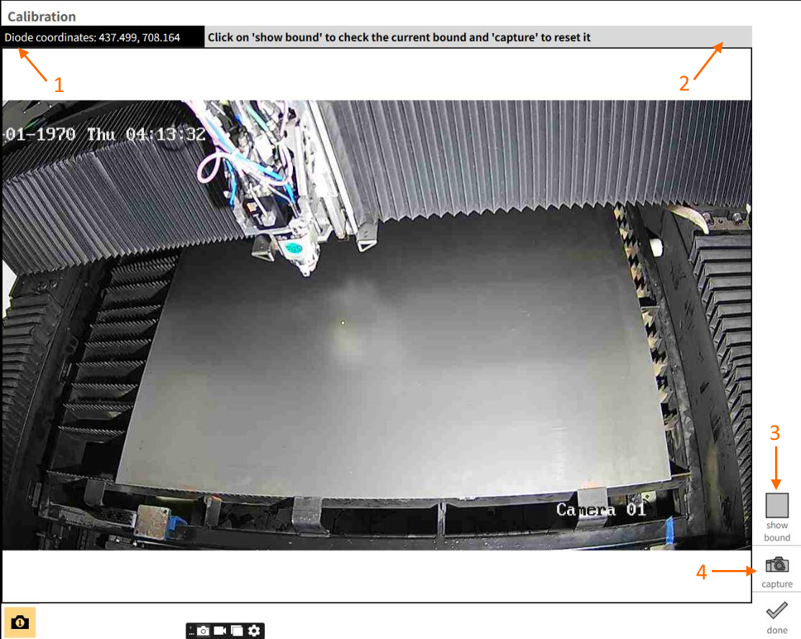

Drop and Cut
The Drop and Cut feature uses a network camera mounted inside the machine to provide a live view of the sheet on the pallet. After calibrating the camera, you can place parts directly onto the camera image in postproduction, and Vulcan automatically captures the work offset — eliminating the need for manual offset entry.
Camera model and specifications
Model name: Hikvision DS-2CD1027G2-L
| Specification | Value |
|---|---|
Camera |
|
Image Sensor |
1/2.8" Progressive Scan CMOS |
Max. Resolution |
1920 x 1080 |
Min. Illumination |
Color: 0.001 Lux @ (F1.0, AGC ON), 0 Lux with light |
Shutter Time |
1/3 s to 1/100,000 s |
Day & Night |
24/7 color imaging |
Angle Adjustment |
Pan: 0° to 360°, tilt: 0° to 90°, rotate: 0° to 360° |
Lens |
|
Lens Type |
Fixed focal lens, 2.8 and 4 mm optional |
Focal Length & FOV |
2.8 mm, horizontal FOV: 106°, vertical FOV: 57°, diagonal FOV: 126° |
Lens Mount |
M12 |
Iris Type |
Fixed |
Aperture |
F1.0 |
Depth of Field |
2.8 mm: 1.5 m to ∞ |
DORI |
|
DORI |
2.8 mm, D: 44 m, O: 17 m, R: 8 m, I: 4 m |
Illuminator |
|
Supplement Light Type |
White Light |
Supplement Light Range |
Up to 30 m |
Smart Supplement Light |
Yes |
Video |
|
Main Stream |
50 Hz: 25 fps (1920 x 1080, 1280 x 720) |
Sub-Stream |
50 Hz: 25 fps (640 x 480, 640 x 360) |
Video Compression |
Main stream: H.265+/H.265/H.264+/H.264 |
Video Bit Rate |
32 Kbps to 8 Mbps |
H.264 Type |
Baseline Profile, Main Profile, High Profile |
H.265 Type |
Main Profile |
Bit Rate Control |
CBR, VBR |
Region of Interest (ROI) |
1 fixed region(s) for main stream |
Positioning the camera in the machine
The camera is mounted inside the machine, positioned on the top inner right side of the door, at 50 mm. It provides a view from inside the machine. The viewing angle is tilted to align with the placement of half the sheet.


Connecting a network camera in Vulcan
To establish communication between the camera and Vulcan, the camera IP address must be configured within the same network series as the machine IP address.
Checking the machine IP address
-
Switch to Service User Active mode:
-
Open Settings
-
Select Switch User
-
Change the user group to Service User Active
-
-
Open the Command Shell:
-
Go to Windows Tools
-
Select Command Shell
-
-
Type
ipconfigand press Enter. The system will display the machine’s network details, including the IP address connected in the local area network.

Configuring the camera IP address
The camera must be configured with an IP address in the same series as the machine.
Example:
-
Machine IP:
192.168.1.176 -
Camera IP:
192.168.1.xxx
| Ensure the camera IP address is unique and not already assigned to another device. Contact the IT team to confirm uniqueness. |
By default, the Hikvision DS-2CD1027G2-L camera uses IP 192.168.1.64,
which is already in the correct series. No manual configuration is required
unless the IP differs.
|
Configuring the system IP address (if needed)
If the camera has a different IP address:
-
Connect the camera directly to a system via Ethernet.
-
Use the default IP address provided in the camera manual.
-
Configure the system IP in the same range:
-
IP Address:
192.168.1.176 -
Subnet Mask:
255.255.255.0 -
Default Gateway: As required
-

| Ensure that the system IP address and camera IP address are in the same network series. Do not assign an IP address that is already used by another device on the network. |
Configuring the camera in Vulcan
-
Navigate to
C:\ProgramData\Metamation\Vulcan\Dataand openCamSettings.xmlin a text editor. -
Update the configuration details:
<Camera id="1" description="Camera 1" enable="true"> <Configuration> <LiveStream enable="false" url="http://192.168.1.64/ISAPI/Streaming/channels/101/picture" /> <LiveStreamDefault enable="true" url="http://192.168.1.64/ISAPI/Streaming/channels/101/picture" /> <Authentification username="admin" password="your_password" /> </Configuration> </Camera> -
Replace the IP address in the
urlfield with the actual camera IP. -
Update authentication details if required.
-
Save the file and close the editor.
Verifying the camera connection
-
Open Vulcan → Calibration page.
-
Confirm that the camera feed is displayed correctly.
-
Ensure:
-
Camera IP matches the XML configuration
-
System and camera are in the same network series
-
Username and password are correct
-
Rectifying camera distortion
| Vulcan does not currently support camera undistortion. It will be implemented in a future release. Vulcan supports all IP cameras but may have some deviation with distorted cameras. |
To correct lens distortion:
-
Print a checkerboard pattern and stick it onto a flat, rigid blackboard. Make sure the surface is even and does not bend.
-
Take multiple images of the checkerboard. While capturing:
-
Move the board so that various parts of the checkerboard appear in the centre, edges, and corners of the camera view.
-
Tilt the board at slightly different angles to capture more variation.
This helps the calibration process understand how the camera behaves across the entire field of view.
-
Running the undistort function
Run the captured images through the undistortion code. The code will compute:
-
K (intrinsic matrix) — represents the focal length and optical centre of the camera
-
Distortion coefficients — represent the lens distortion present in the camera
These values describe how the camera forms an image and how it distorts. All matrices can be saved in XML format and reused later, as long as the camera setup remains unchanged (no movement, no focus change, etc.).
Verifying the undistortion
-
After undistortion, check whether the distortion has been corrected properly and the output image looks accurate.
-
Lens distortion is usually stronger near the edges and corners of the image, so pay special attention to those regions.
-
If the distortion is not properly corrected, repeat the undistortion process with better images.
Steps to calibrate
-
Go to Configure → Calibration.

① Shows live position diode coordinates.
② Status message to guide the user through the calibration process.
③ Displays the saved bound region.
④ To capture a new bound region. -
The live image from the camera will appear on the control screen.
-
Click Show Bound to view the saved calibration boundary. This helps to verify the visible area and confirm whether the camera is correctly positioned to capture the desired portion of the sheet.
-
If the displayed boundary does not match the desired sheet area, click Capture to reset and provide new bound points.
-
Proceed with calibration by measuring four reference points one by one on the sheet by guiding the position diode and clicking on it, thus forming an exact rectangular boundary.
Capture mode

① Guides the order of points to be captured.
② To exit capture mode without saving changes.
Once the position diode is placed at the required position and a point is clicked on the position diode, the position diode position will automatically be captured for the corresponding point.
| If the position diode point is not updating when the laser head is moved in the calibration page, the textbox prompts for user-input of the machine point which must be entered manually and confirmed by pressing Enter or clicking outside the textbox. |
Once all four points are given, a confirmation popup appears. If confirmed, the bound will be added; if not, the previous bound will be retained. After confirmation, the bound will be displayed.
| Calibration is a one-time process that remains valid unless the camera position or pallet changes. |

Using the calibrated view in postproduction

-
Once the bound is saved, head to Postproduction by choosing the desired LST file from Programs.
-
The camera view in postproduction takes up the saved bound, within which parts can be added and saved.
-
Click Save NC — the work offset is captured with respect to the bound region. The saved part can then be cut without needing any manual capture of work offset.